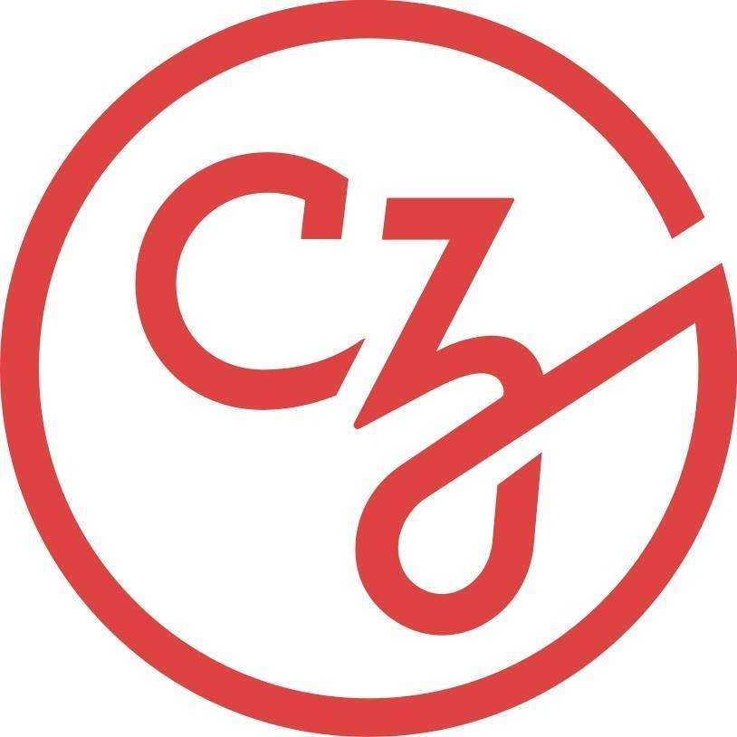
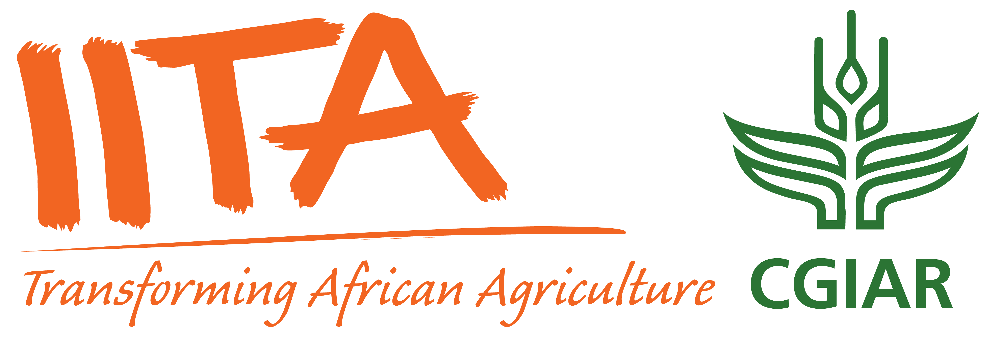
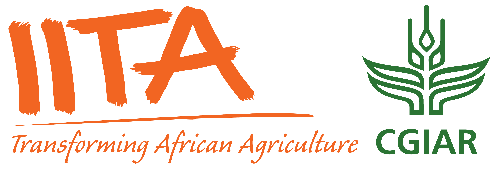

This intensive week-long Bioconductor course is designed to build bioinformatics capacity in Africa, focusing on practical skills in genomic data analysis and RNA-seq. Participants will gain hands-on experience with R and Bioconductor, guided by expert instructors from both local and international bioinformatics communities.
March 24-25: Introduction to R/Bioconductor for Genomic Data Analysis
Develop foundational skills in R and Bioconductor, including data handling, visualisation, and reproducible research practices tailored for genomic data analysis.
March 26-27: RNA-seq Data Analysis and Interpretation
Dive into RNA-seq workflows, from preprocessing to differential expression analysis, and gain practical experience with real-world datasets.
March 28: Bring Your Own Data (BYO) Day
Apply your skills to your own data or explore additional datasets, with personalised guidance and collaborative support from instructors.
The workshop will be led by a team of Carpentries-certified instructors from the Bioconductor community, including both local bioinformatics experts and experienced international instructors. This blend ensures a diversity of perspectives and expertise, fostering a strong collaborative learning environment.
A single registration covers the full week of sessions. Registration details, including the application form, will be posted soon. We welcome participants who are keen to develop their bioinformatics skills with a focus on genomic data analysis.
This workshop is part of Bioconductor’s expanded global training program, supported by the Chan Zuckerberg Initiative (CZI) through an EOSS Cycle 6 grant. You can read more about this and related projects here.
For questions, please email maria.doyle [at] ul.ie.
Stay informed about course registration opening, news, projects, and events in Africa.
  
